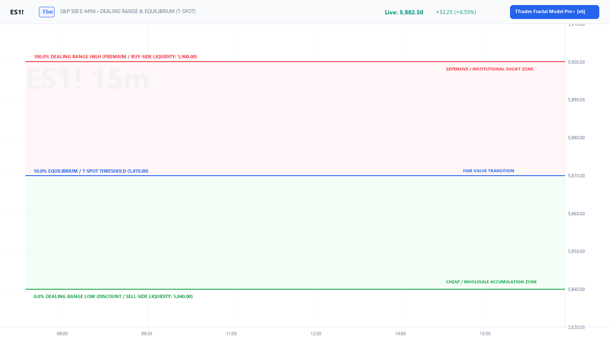

Chapter 01: Foundational Concepts & Market Delivery¶
Core Curriculum | Next: Chapter 02: The C1–C2–C3–C4 Fractal Sequence
1. The Core Philosophy of Market Delivery¶
The TTrades Fractal Model is predicated on the foundational tenet that financial markets do not move randomly; they deliver price algorithmically based on liquidity and orderflow imbalances.
"Wicks Do the Damage, Bodies Tell the Story"¶
This ICT maxim is the bedrock of candle interpretation in the Fractal Model:
- The Candle Body (
ClosevsOpen): Represents true institutional volume and conviction. Where the candle body closes tells you whether algorithmic delivery was accepted or rejected at that price level. - The Candle Wick (
HighandLow): Represents liquidity probes, sweeps, and stop hunts. A wick extending past a level without candle body acceptance indicates orders were filled and price was immediately rejected.
| Metric | Liquidity Sweep (Reversal) | Volume Acceptance (Expansion) |
|---|---|---|
| Candle Wick | Pierces past key swing high or low level | Traverses through the level |
| Candle Body Close | Closes strictly inside the prior range | Closes strictly beyond the level |
| Algorithmic State | Liquidity purged, orderbook filled against retail | Orderbook accepts higher/lower prices |
| Actionable Bias | Look for C3 CISD reversal setup | Look for trend continuation / C4 continuation |
2. Sweeps vs. Closes: Determining Market Intent¶
When price reaches an established swing high, session boundary, or key level, it interacts in one of two distinct algorithmic modes:
graph TD
Level["Price Reaches Swing High / Low (Liquidity Pool)"] --> Test{"How does the Candle Close?"}
Test -->|Wick pierces, Body closes INSIDE| Sweep["LIQUIDITY SWEEP (C2 Extreme)<br/>Smart Money filled opposing orders.<br/>Expect Reversal toward Opposite Liquidity."]
Test -->|Body closes CLEARLY BEYOND| Breakout["VOLUME BREAKOUT (Expansion)<br/>Market accepts new price territory.<br/>Expect Continuation to Next HTF Pool."]3. Dealing Ranges & The 50% Equilibrium (T-Spot)¶
Every high-probability trade setup exists inside an active Dealing Range (the swing high and swing low defining current institutional price delivery).
Visualizing the 50% Equilibrium Box¶
Below is the photorealistic chart showing the exact 50.00% Equilibrium line separating the Premium Sell Zone from the Discount Buy Zone:

The Mathematical Formula:¶
- Wholesale Discount (< 50%): Institutional buy programs only execute when price trades below equilibrium into discount arrays (FVG, Orderblock, C2 Low).
- Expensive Premium (> 50%): Institutional sell programs distribute long positions or open short positions when price trades above equilibrium.
- TTrades Nuance:
- During strong institutional expansions, price respects the 50% equilibrium line.
- If a bullish displacement holds above 50% of the manipulation leg, the institutional orderbook remains fiercely protected by buyers.
4. Internal vs. External Liquidity Delivery (ERL to IRL)¶
Price perpetually cycles between two states of liquidity:
- External Range Liquidity (ERL):
- Major swing highs, swing lows, and session extremes (Previous Day High/Low, London Session High/Low, Asian Session High/Low).
- Once ERL is purged via a sweep, price seeks Internal Range Liquidity (IRL).
- Internal Range Liquidity (IRL):
- Fair Value Gaps (FVG), Balanced Price Ranges (BPR), and Orderblocks inside the range.
- Once IRL is rebalanced/mitigated, price spools back to seek opposing ERL.
The Master Execution Formula
We wait for an ERL sweep (forming a C2 candle), look for mitigation inside an IRL Point of Interest (the T-Spot / FVG), and ride the C3 expansion into opposing ERL.